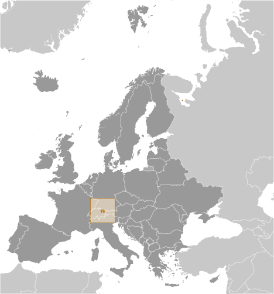
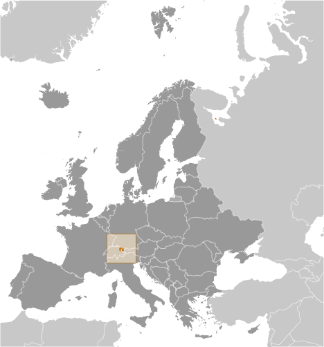

-
Introduction :: Liechtenstein
-
Background:The Principality of Liechtenstein was established within the Holy Roman Empire in 1719. Occupied by both French and Russian troops during the Napoleonic Wars, it became a sovereign state in 1806 and joined the German Confederation in 1815. Liechtenstein became fully independent in 1866 when the Confederation dissolved. Until the end of World War I, it was closely tied to Austria, but the economic devastation caused by that conflict forced Liechtenstein to enter into a customs and monetary union with Switzerland. Since World War II (in which Liechtenstein remained neutral), the country's low taxes have spurred outstanding economic growth. In 2000, shortcomings in banking regulatory oversight resulted in concerns about the use of financial institutions for money laundering. However, Liechtenstein implemented anti-money laundering legislation and a Mutual Legal Assistance Treaty with the US that went into effect in 2003.
-
Geography :: Liechtenstein
-
Location:Central Europe, between Austria and SwitzerlandGeographic coordinates:47 16 N, 9 32 EMap references:EuropeArea:total: 160 sq kmland: 160 sq kmwater: 0 sq kmcountry comparison to the world: 219Area - comparative:about 0.9 times the size of Washington, DCLand boundaries:total: 75 kmborder countries (2): Austria 34 km, Switzerland 41 kmCoastline:0 km (doubly landlocked)Maritime claims:none (landlocked)Climate:continental; cold, cloudy winters with frequent snow or rain; cool to moderately warm, cloudy, humid summersTerrain:mostly mountainous (Alps) with Rhine Valley in western thirdElevation:430 m lowest point: Ruggeller Riet2599 highest point: Vorder-GrauspitzNatural resources:hydroelectric potential, arable landLand use:agricultural land: 37.6% (2011 est.)arable land: 18.8% (2011 est.) / permanent crops: 0% (2011 est.) / permanent pasture: 18.8% (2011 est.)forest: 43.1% (2011 est.)other: 19.3% (2011 est.)Irrigated land:0 sq km (2012)Population distribution:most of the population is found in the western half of the country along the Rhine RiverNatural hazards:avalanches, landslidesEnvironment - current issues:some air pollution generated locally, some transfered from surrounding countriesEnvironment - international agreements:party to: Air Pollution, Air Pollution-Nitrogen Oxides, Air Pollution-Persistent Organic Pollutants, Air Pollution-Sulfur 85, Air Pollution-Sulfur 94, Air Pollution-Volatile Organic Compounds, Biodiversity, Climate Change, Climate Change-Kyoto Protocol, Desertification, Endangered Species, Hazardous Wastes, Ozone Layer Protection, Wetlandssigned, but not ratified: Law of the SeaGeography - note:along with Uzbekistan, one of only two doubly landlocked countries in the world; variety of microclimatic variations based on elevation
-
People and Society :: Liechtenstein
-
Population:38,547 (July 2017 est.) (July 2018 est.)
note: immigrants make up 65% of the total population, according to UN data (2017)
country comparison to the world: 213Nationality:noun: Liechtensteiner(s)adjective: LiechtensteinEthnic groups:Liechtensteiner 66.2%, Swiss 9.6%, Austrian 5.8%, Italian 4.2%, German 3.1% other 11.2% (2016 est.)Languages:German 91.5% (official) (Alemannic is the main dialect), Italian 1.5%, Turkish 1.3%, Portuguese 1.1%, other 4.6% (2015 est.)Religions:Roman Catholic (official) 73.4%, Protestant Reformed 6.3%, Muslim 5.9%, Christian Orthodox 1.3%, Lutheran 1.2%, other Protestant .7%, other Christian .3%, other .8%, none 7%, unspecified 3.3% (2015 est.)Age structure:0-14 years: 15.23% (male 3,179 /female 2,692)15-24 years: 11.53% (male 2,256 /female 2,190)25-54 years: 41.18% (male 7,923 /female 7,951)55-64 years: 14.14% (male 2,640 /female 2,811)65 years and over: 17.91% (male 3,171 /female 3,734) (2018 est.)population pyramid: The World Factbook Field Image ModalEurope :: Liechtenstein Print
The World Factbook Field Image ModalEurope :: Liechtenstein Print Image DescriptionThis is the population pyramid for Liechtenstein. A population pyramid illustrates the age and sex structure of a country's population and may provide insights about political and social stability, as well as economic development. The population is distributed along the horizontal axis, with males shown on the left and females on the right. The male and female populations are broken down into 5-year age groups represented as horizontal bars along the vertical axis, with the youngest age groups at the bottom and the oldest at the top. The shape of the population pyramid gradually evolves over time based on fertility, mortality, and international migration trends.
Image DescriptionThis is the population pyramid for Liechtenstein. A population pyramid illustrates the age and sex structure of a country's population and may provide insights about political and social stability, as well as economic development. The population is distributed along the horizontal axis, with males shown on the left and females on the right. The male and female populations are broken down into 5-year age groups represented as horizontal bars along the vertical axis, with the youngest age groups at the bottom and the oldest at the top. The shape of the population pyramid gradually evolves over time based on fertility, mortality, and international migration trends.
For additional information, please see the entry for Population pyramid on the Definitions and Notes page under the References tab.Median age:total: 43.4 yearsmale: 41.8 yearsfemale: 44.8 years (2018 est.)country comparison to the world: 19Population growth rate:0.78% (2018 est.)country comparison to the world: 132Birth rate:10.4 births/1,000 population (2018 est.)country comparison to the world: 188Death rate:7.6 deaths/1,000 population (2018 est.)country comparison to the world: 105Net migration rate:5 migrant(s)/1,000 population (2017 est.)country comparison to the world: 24Population distribution:most of the population is found in the western half of the country along the Rhine RiverUrbanization:urban population: 14.3% of total population (2018)rate of urbanization: 0.81% annual rate of change (2015-20 est.)Major urban areas - population:5,000 VADUZ (capital) (2018)Sex ratio:at birth: 1.25 male(s)/female (2017 est.)0-14 years: 1.17 male(s)/female (2017 est.)15-24 years: 0.99 male(s)/female (2017 est.)25-54 years: 1 male(s)/female (2017 est.)55-64 years: 0.95 male(s)/female (2017 est.)65 years and over: 0.84 male(s)/female (2017 est.)total population: 0.99 male(s)/female (2017 est.)Infant mortality rate:total: 4.2 deaths/1,000 live births (2018 est.)male: 4.5 deaths/1,000 live births (2018 est.)female: 3.8 deaths/1,000 live births (2018 est.)country comparison to the world: 189Life expectancy at birth:total population: 82 years (2018 est.)male: 79.8 years (2018 est.)female: 84.8 years (2018 est.)country comparison to the world: 21Total fertility rate:1.69 children born/woman (2018 est.)country comparison to the world: 174HIV/AIDS - adult prevalence rate:NAHIV/AIDS - people living with HIV/AIDS:NAHIV/AIDS - deaths:NAEducation expenditures:2.6% of GDP (2011)country comparison to the world: 161School life expectancy (primary to tertiary education):total: 15 years (2015)male: 16 years (2015)female: 13 years (2015) -
Government :: Liechtenstein
-
Country name:conventional long form: Principality of Liechtensteinconventional short form: Liechtensteinlocal long form: Fuerstentum Liechtensteinlocal short form: Liechtensteinetymology: named after the Liechtenstein dynasty that purchased and united the counties of Schellenburg and Vaduz and that was allowed by the Holy Roman Emperor in 1719 to rename the new property after their family; the name in German means "light (bright) stone"Government type:constitutional monarchyCapital:name: Vaduzgeographic coordinates: 47 08 N, 9 31 Etime difference: UTC+1 (6 hours ahead of Washington, DC, during Standard Time)daylight saving time: +1hr, begins last Sunday in March; ends last Sunday in OctoberAdministrative divisions:11 communes (Gemeinden, singular - Gemeinde); Balzers, Eschen, Gamprin, Mauren, Planken, Ruggell, Schaan, Schellenberg, Triesen, Triesenberg, VaduzIndependence:23 January 1719 (Principality of Liechtenstein established); 12 July 1806 (independence from the Holy Roman Empire); 24 August 1866 (independence from the German Confederation)National holiday:National Day, 15 August (1940); note - a National Day was originally established in 1940 to combine celebrations for the Feast of the Assumption (15 August) with those honoring the birthday of former Prince FRANZ JOSEF II (1906-1989) whose birth fell on 16 August; after the prince's death, National Day became the official national holiday by law in 1990Constitution:history: previous 1862; latest adopted 5 October 1921 (2016)amendments: proposed by Parliament, by the reigning prince (in the form of "Government" proposals), by petition of at least 1,500 qualified voters, or by at least four communes; passage requires unanimous approval of Parliament members in one sitting or three-quarters majority vote in two successive sittings; referendum required only if petitioned by at least 1,500 voters or by at least four communes; passage by referendum requires absolute majority of votes cast; amended several times, last in 2011 (2016)Legal system:civil law system influenced by Swiss, Austrian, and German lawInternational law organization participation:accepts compulsory ICJ jurisdiction with reservations; accepts ICCt jurisdictionCitizenship:citizenship by birth: nocitizenship by descent only: the father must be a citizen of Liechtenstein; in the case of a child born out of wedlock, the mother must be a citizendual citizenship recognized: noresidency requirement for naturalization: 5 yearsSuffrage:18 years of age; universalJudicial branch:highest courts: Supreme Court or Oberster Gerichtshof (consists of 5 judges); Constitutional Court or Verfassungsgericht (consists of 5 judges and 5 alternates)judge selection and term of office: judges of both courts elected by the Landtag and appointed by the monarch; Supreme Court judges serve 4-year renewable terms; Constitutional Court judges appointed for renewable 5-year termssubordinate courts: Court of Appeal or Obergericht (second instance), Court of Justice (first instance), Administrative Court, county courtsExecutive branch:chief of state: Prince HANS-ADAM II (since 13 November 1989, assumed executive powers on 26 August 1984); Heir Apparent and Regent of Liechtenstein Prince ALOIS (son of the monarch, born 11 June 1968); note - on 15 August 2004, HANS-ADAM II transferred the official duties of the ruling prince to ALOIS, but HANS-ADAM II retains status of chief of statehead of government: Prime Minister Adrian HASLER (since 27 March 2013)cabinet: Cabinet elected by the Parliament, confirmed by the monarchelections/appointments: the monarchy is hereditary; following legislative elections, the leader of the majority party in the Parliament usually appointed the head of government by the monarch, and the leader of the largest minority party in the Landtag usually appointed the deputy head of government by the monarch if there is a coalition governmentLegislative branch:description: unicameral Parliament or Landtag (25 seats; members directly elected in 2 multi-seat constituencies by proportional representation vote to serve 4-year terms)elections: last held on 5 February 2017 (next to be held in February 2021)election results: percent of vote by party - FBP 35.2%, VU 33.7%, DU 18.4% FL 12.6%; seats by party - FBP 9, VU 8, DU 5, FL 3; composition - men 22, women 3, percent of women 12%Political parties and leaders:Fatherland Union (Vaterlaendische Union) or VU [Guenther FRITZ]
Progressive Citizens' Party (Fortschrittliche Buergerpartei) or FBP [Thomas BANZER]
The Free List (Die Freie Liste) or FL [Pepo FRICK]
The Independents (Die Unabhaengigen) or DU [Harry QUADERER]International organization participation:CD, CE, EBRD, EFTA, IAEA, ICCt, ICRM, IFRCS, Interpol, IOC, IPU, ITSO, ITU, ITUC (NGOs), OAS (observer), OPCW, OSCE, PCA, Schengen Convention, UN, UNCTAD, UPU, WIPO, WTODiplomatic representation in the US:chief of mission: Ambassador Kurt JAEGER (since 16 September 2016)chancery: 2900 K Street, NW, Suite 602B, Washington, DC 20007telephone: [1] (202) 331-0590FAX: [1] (202) 331-3221Diplomatic representation from the US:the US does not have an embassy in Liechtenstein; the US Ambassador to Switzerland is accredited to LiechtensteinFlag description:two equal horizontal bands of blue (top) and red with a gold crown on the hoist side of the blue band; the colors may derive from the blue and red livery design used in the principality's household in the 18th century; the prince's crown was introduced in 1937 to distinguish the flag from that of HaitiNational symbol(s):princely hat (crown); national colors: blue, redNational anthem:name: "Oben am jungen Rhein" (High Above the Young Rhine)lyrics/music: Jakob Joseph JAUCH/Josef FROMMELTnote: adopted 1850, revised 1963; uses the tune of "God Save the Queen"
-
Economy :: Liechtenstein
-
Economy - overview:
Despite its small size and lack of natural resources, Liechtenstein has developed into a prosperous, highly industrialized, free-enterprise economy with a vital financial services sector and one of the highest per capita income levels in the world. The Liechtenstein economy is widely diversified with a large number of small and medium-sized businesses, particularly in the services sector. Low business taxes - a flat tax of 12.5% on income is applied - and easy incorporation rules have induced many holding companies to establish nominal offices in Liechtenstein, providing 30% of state revenues.
The country participates in a customs union with Switzerland and uses the Swiss franc as its national currency. It imports more than 90% of its energy requirements. Liechtenstein has been a member of the European Economic Area (an organization serving as a bridge between the European Free Trade Association and the EU) since May 1995. The government is working to harmonize its economic policies with those of an integrated EU. As of 2015, 54% of Liechtenstein’s workforce consisted of cross-border commuters, largely from Austria, Germany, and Switzerland.
Since 2008, Liechtenstein has faced renewed international pressure - particularly from Germany and the US - to improve transparency in its banking and tax systems. In December 2008, Liechtenstein signed a Tax Information Exchange Agreement with the US. Upon Liechtenstein's conclusion of 12 bilateral information-sharing agreements, the OECD in October 2009 removed the principality from its "grey list" of countries that had yet to implement the organization's Model Tax Convention. By the end of 2010, Liechtenstein had signed 25 Tax Information Exchange Agreements or Double Tax Agreements. In 2011, Liechtenstein joined the Schengen area, which allows passport-free travel across 26 European countries. In 2015, Liechtenstein and the EU agreed to clamp down on tax fraud and evasion and in 2018 will start automatically exchanging information on the bank accounts of each other’s residents.
GDP (purchasing power parity):$4.978 billion (2014 est.)$3.2 billion (2009 est.)$3.216 billion (2008 est.)country comparison to the world: 179GDP (official exchange rate):$6.672 billion (2014 est.) (2014 est.)GDP - real growth rate:1.8% (2012 est.)-0.5% (2011 est.)3.1% (2007 est.)country comparison to the world: 161GDP - per capita (PPP):$139,100 (2009 est.)$90,100 (2008 est.)$91,300 (2007 est.)country comparison to the world: 1GDP - composition, by sector of origin:agriculture: 7% (2014)industry: 41% (2014)services: 52% (2014)Agriculture - products:wheat, barley, corn, potatoes; livestock, dairy productsIndustries:electronics, metal manufacturing, dental products, ceramics, pharmaceuticals, food products, precision instruments, tourism, optical instrumentsIndustrial production growth rate:NALabor force:38,520 (2012) (2015 est.)note: 51% of the labor force in Liechtenstein commute daily from Austria, Switzerland, and Germany
country comparison to the world: 199Labor force - by occupation:agriculture: 0.8%industry: 36.9%services: 62.3% (2015)Unemployment rate:2.4% (2015)2.4% (2014)country comparison to the world: 24Population below poverty line:NABudget:revenues: 995.3 million (2012 est.)expenditures: 890.4 million (2011 est.)Taxes and other revenues:14.9% (of GDP) (2012 est.)country comparison to the world: 195Budget surplus (+) or deficit (-):1.6% (of GDP) (2012 est.)country comparison to the world: 20Fiscal year:calendar yearInflation rate (consumer prices):-0.4% (2016 est.)-0.2% (2013)country comparison to the world: 7Exports:$3.217 billion (2015 est.)$3.774 billion (2014 est.)note: trade data exclude trade with Switzerland
country comparison to the world: 128Exports - commodities:small specialty machinery, connectors for audio and video, parts for motor vehicles, dental products, hardware, prepared foodstuffs, electronic equipment, optical productsImports:$0 (2015 est.)$2.23 billion (2014 est.)note: trade data exclude trade with Switzerland
country comparison to the world: 224Imports - commodities:agricultural products, raw materials, energy products, machinery, metal goods, textiles, foodstuffs, motor vehiclesDebt - external:$0 (2015 est.)note: public external debt only; private external debt unavailablecountry comparison to the world: 206Exchange rates:Swiss francs (CHF) per US dollar -0.9875 (2017 est.)0.9852 (2016 est.)0.9852 (2015 est.)0.9627 (2014 est.)0.9152 (2013 est.) -
Energy :: Liechtenstein
-
Electricity access:electrification - total population: 100% (2016)Electricity - production:68.43 million kWh (2015 est.)country comparison to the world: 202Electricity - consumption:393.6 million kWh (2015 est.)country comparison to the world: 174Electricity - exports:0 kWh (2015 est.) (2015 est.)country comparison to the world: 161Electricity - imports:325.2 million kWh (2015 est.)country comparison to the world: 88
-
Communications :: Liechtenstein
-
Telephones - fixed lines:total subscriptions: 15,852 (2017 est.)subscriptions per 100 inhabitants: 41 (2017 est.)country comparison to the world: 187Telephones - mobile cellular:total subscriptions: 46,625 (2017 est.)subscriptions per 100 inhabitants: 122 (2017 est.)country comparison to the world: 201Telephone system:general assessment: automatic telephone system, connected to Swiss telephone networks via cable and microwave radio relay systems; 44 internet service providers in Liechtenstein and Switzerland combined (2017)domestic: fixed-line 41 per 100 and mobile-cellular services 122 per 100; widely available (2017)international: country code - 423; linked to Swiss networks by cable and microwave radio relay (2016)Broadcast media:relies on foreign terrestrial and satellite broadcasters for most broadcast media services; first Liechtenstein-based TV station established August 2008; Radio Liechtenstein operates multiple radio stations; a Swiss-based broadcaster operates several radio stations in Liechtenstein (2008)Internet country code:.liInternet users:total: 37,214 (July 2016 est.)percent of population: 98.1% (July 2016 est.)country comparison to the world: 201Broadband - fixed subscriptions:total: 15,935 (2017 est.)subscriptions per 100 inhabitants: 42 (2017 est.)country comparison to the world: 159
-
Transportation :: Liechtenstein
-
Civil aircraft registration country code prefix:HB (2016)Pipelines:20 km gas (2013)Railways:total: 9 km (2008)standard gauge: 9 km 1.435-m gauge (electrified) (2008)
note: belongs to the Austrian Railway System connecting Austria and Switzerland
country comparison to the world: 136Roadways:total: 380 km (2012)paved: 380 km (2012)country comparison to the world: 203Waterways:28 km (2010)country comparison to the world: 105 -
Military and Security :: Liechtenstein
-
Military branches:no regular military forces; National Police maintain close relations with neighboring forces (2016)Military - note:Liechtenstein has no military forces, but the modern National Police maintain close relations with neighboring forces (2013)
-
Transnational Issues :: Liechtenstein
-
Disputes - international:noneIllicit drugs:has strengthened money laundering controls, but money laundering remains a concern due to Liechtenstein's sophisticated offshore financial services sector
Europe ::
Liechtenstein